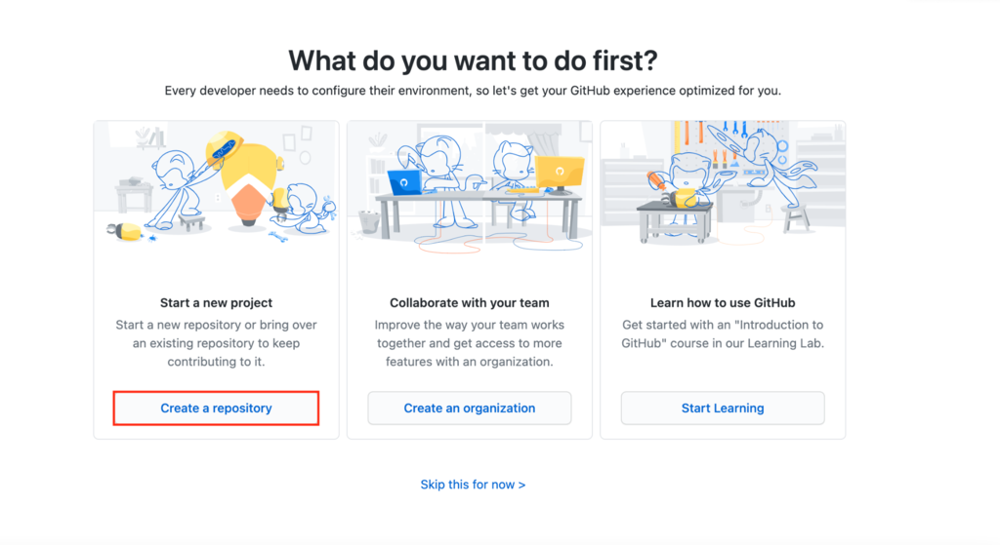
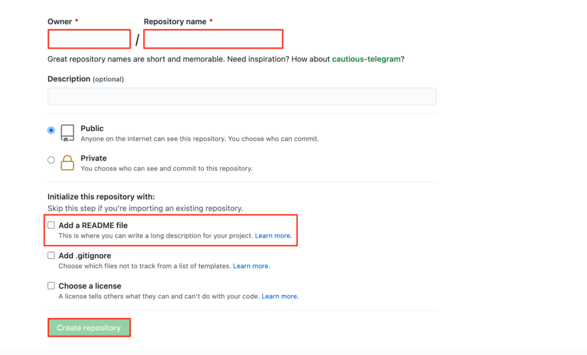
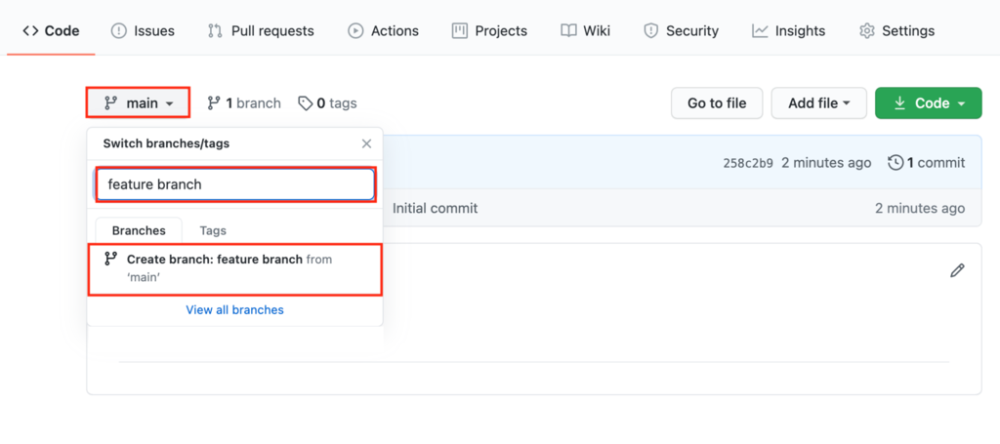
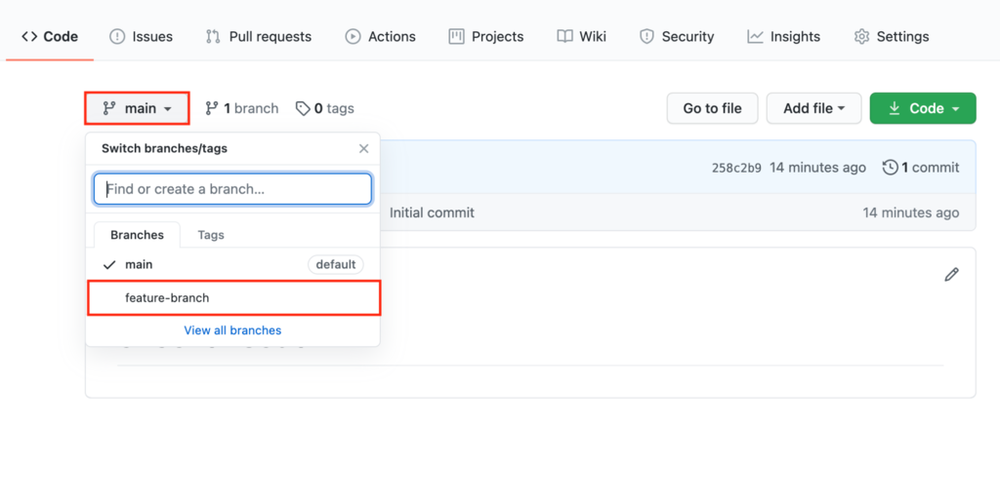
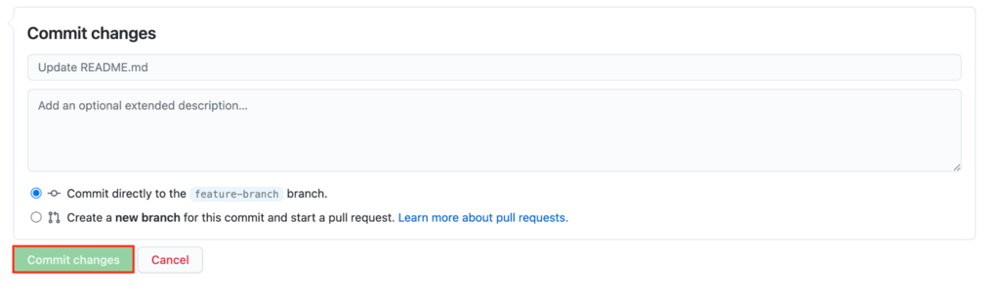
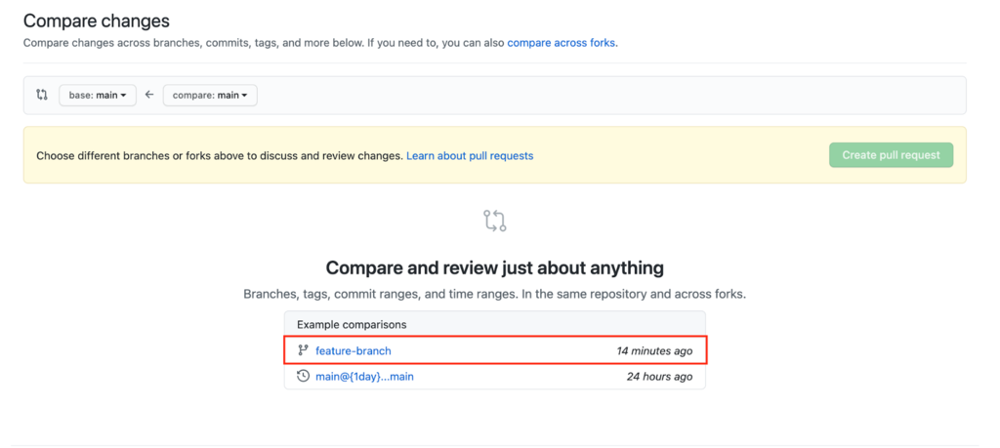
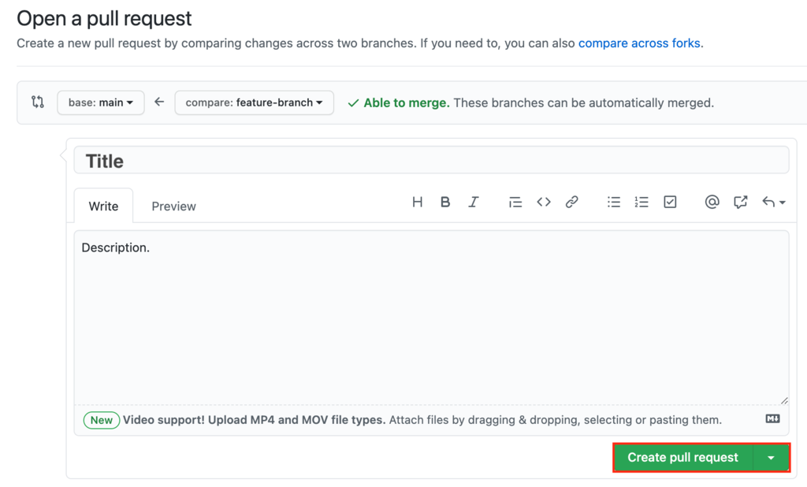

Que es Github
Github es un sistema de control de versiones gratuito y de código abierto, creado originalmente por
Linus Torvalds en 2005. A diferencia de los antiguos sistemas centralizados de control de versiones,
como SVN y CVS, Git se distribuye: cada desarrollador tiene el historial completo
de su repositorio de código localmente. Esto hace que la clonación inicial del repositorio
más lento, pero las operaciones subsiguientes como cometer, culpar, diferenciar, fusionar y registrar son
mucho mas rápido
Git incluye las capacidades de bifurcación y fusión y reescritura del historial del
repositorio, lo que da como resultado muchas herramientas y flujos de trabajo innovadores y potentes.
Las solicitudes de subida son una herramienta popular con la que los equipos pueden colaborar en las ramas de Git
y revisar efectivamente el código de cada uno. Git es el más utilizado sistema de control de versiones
en el mundo de hoy, y se considera el modelo a seguir en desarrollo de software.
How Git works
Basically Git works as follows:
- Create a "repository" (project) with a Git hosting tool (eg Bitbucket)
- Copy (or clone) the repository to your local machine
- Add a file to your local repository and commit the changes
- Push changes to the main branch
- Make changes to your file with a Git hosting tool and commit them
- Extract ("pull") the changes to your local machine
- Create a branch ("branch", version), make a change and confirm it
- Open a pull request ("pull request": propose changes to the main branch)
- Merge your branch with the main branch
Learning to use GitHub
Create a GitHub repository
A repository will be the central axis of your project. It can be a file or a collection
of files containing code, images, text, or anything else.
To start the process, follow these steps:
- Click Create a repository to start a new project.

- The Owner section will already have your account name. Create a repository name.
Check if it's set to Public to be open source, and then check the Add a
README file box. Finally, click Create repository.

Create branches on GitHub
With branching, you generate different versions of a repository. By making changes to
the project in the feature branch, a developer can see how it will affect the master
project when integrated.
This is how you can generate a feature branch:
Go to your new repository. Hit the main button and enter the name of your new
feature branch. Click Create branch.

Understanding GitHub commits
Los commits son la forma en que se denominan los cambios guardados en GitHub.
Cada vez que cambies el archivo de la rama de características, tendrás que hacer un
Commit para mantenerlo.
A continuación te explicamos cómo hacer y confirmar un cambio:
- Access the feature branch by clicking main and selecting your newly created
branch from the dropdown.

- Click on the “pencil icon” to start editing the file. When you're done,
write a brief description of the changes you made. Click Commit changes.

Create pull requests on GitHub
To propose the changes you just made to other developers working on the same project,
you must create a pull request. These make it easy to work together on projects, as they
are the main collaboration tool on GitHub.
Pull requests allow you to see the differences between the original project and your
feature branch. It is the way to ask your colleagues to review them. If the other
developers approve, they can merge the pull request, which will apply those changes
to the main project.
To make a pull request follow these steps:
- Click Pull requests -> New pull request. Under Example comparisons, select the
feature branch you were working on.

- Review the changes one more time and click Create pull request. On the new page,
write the title and provide a brief description of what you have worked to promote
the merger. Click Create pull request.
